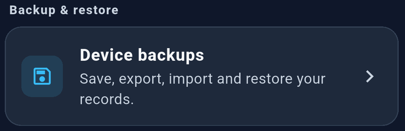
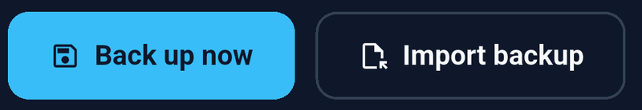
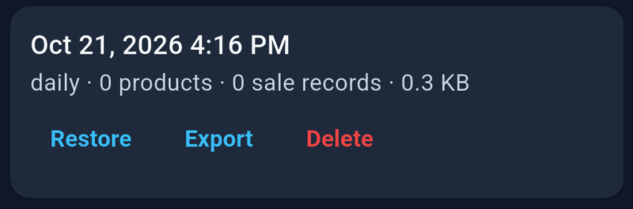

Open Settings → Device backups. Local backup features are free.
How automatic backups work
StockLite checks for automatic backups while the app is open and when you return to it. It creates at most one daily backup when records have changed and keeps the latest seven daily backups. Unchanged data may not produce a new backup.
Automatic checks run in the background without covering your screen. They are not continuous cloud synchronization. A daily backup may not include every sale made later that day; create a manual backup whenever you need a current snapshot.
Manual, imported, and recovery backups are kept separately from the seven daily backups. Backups include business records and product photos.
Create a manual backup


- Open Device backups.
- Tap Back up now.
- Wait for the success message.
- Check the new entry in the backup list.
Create a manual backup after initial setup, before major inventory changes, before a restore, and at the end of a busy day.
Export a backup on Android


- Create a current backup.
- Find it in the list and tap Export.
- Select a destination in the file picker.
- Finish saving and verify the
.stocklitefile exists in that location.
Keep a copy away from the device. Device loss, failure, clearing app data, or uninstalling StockLite can remove local records and backups. A copy stored only on the same phone does not protect against losing that phone.
Exported backup files contain business records and are not encrypted. Store them somewhere you control and share them only with trusted recipients. Keep the .stocklite file intact; do not edit it in a text editor or spreadsheet.
Import and restore on Android
- Make the exported
.stocklitefile available on the destination device. - Open Settings → Device backups → Import backup.
- Select the file and wait for import to finish.
- Find the imported entry and check its date and record counts.
- Tap Restore only when you are ready to replace the current records.
- Read the confirmation and approve the restore.
- Review your inventory and reports afterward.
Importing adds a backup to the list; it does not immediately change your live records.
Restoring replaces the current records with the selected snapshot. It does not merge two devices’ data. StockLite saves the previous records in a recovery backup before replacement. Transactions recorded after the selected snapshot will not be in the restored dataset. Create and export a current backup first if those transactions must be retained.
Delete old backups
Tap Delete on the intended backup, check the confirmation, and confirm. This removes that local backup, not your current inventory or an already-exported copy. Keep at least one known-good copy before deleting older backups.